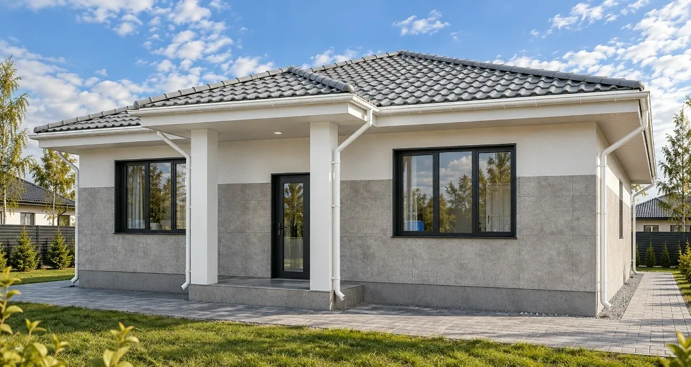
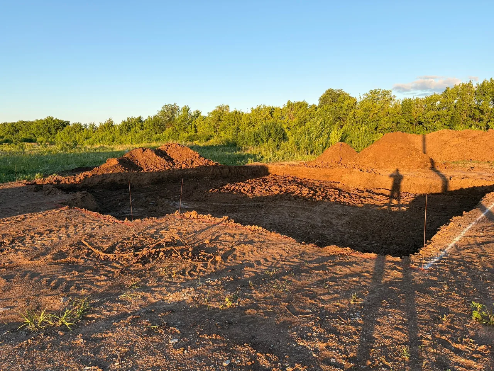
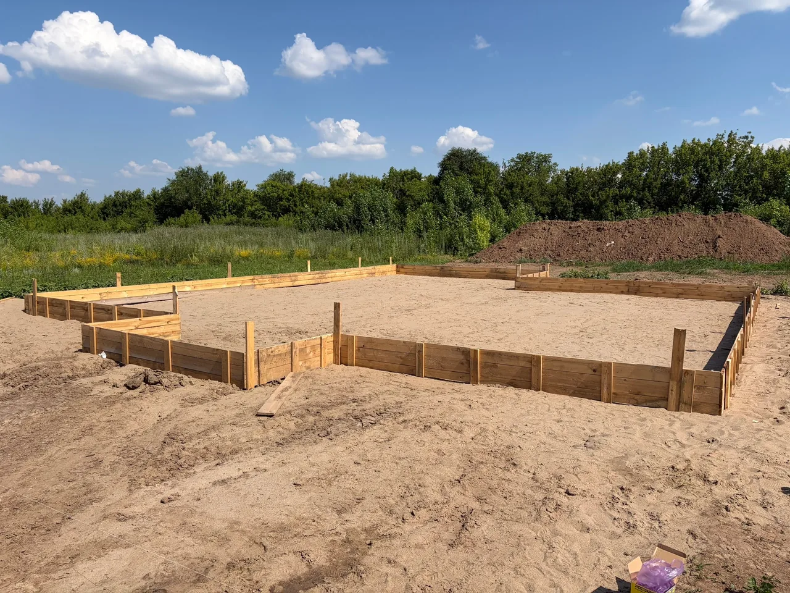
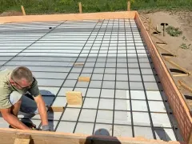
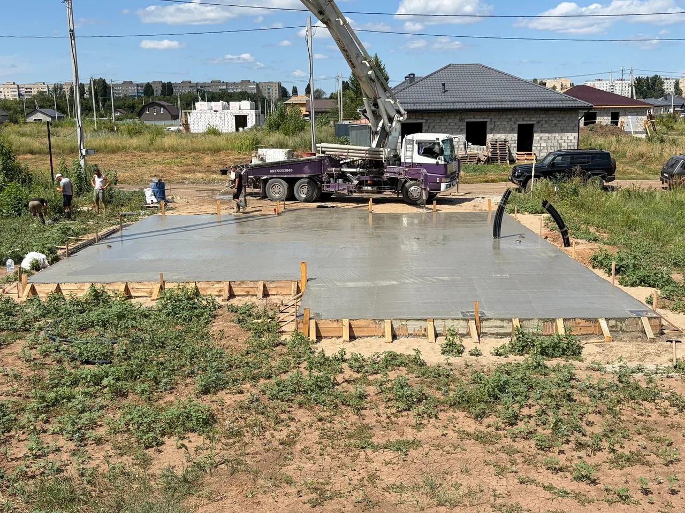
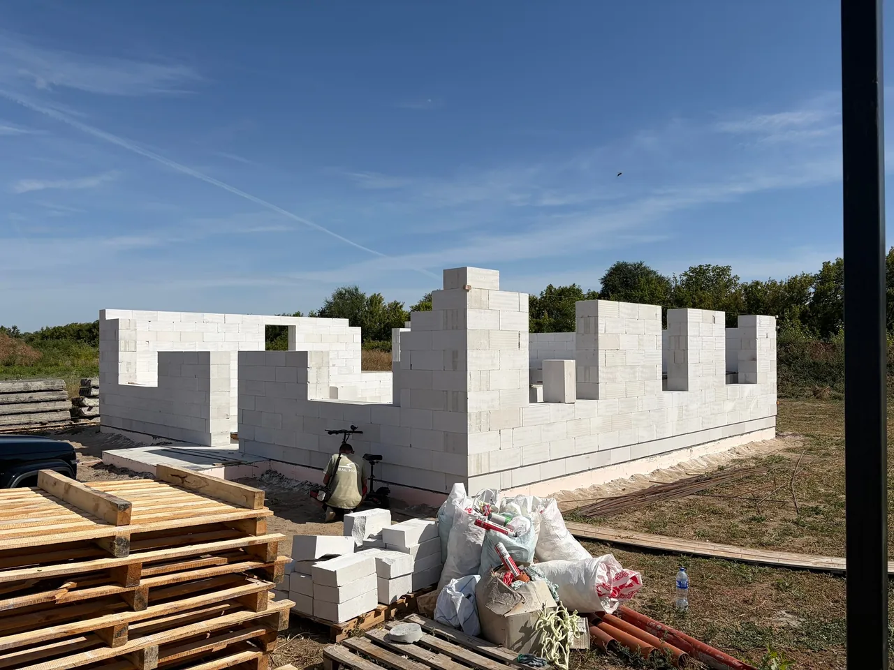
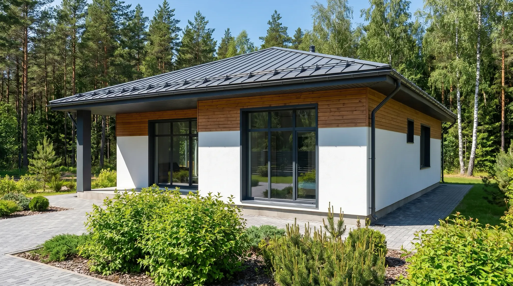

BL-130
Одноэтажный каменный дом с большой террасой
3 спальниКаменный дом
5 875 000 ₽
Комплектацию уточним при расчёте
Подробнее →Подготовка участка, фундамент и возведение стен. Фотографии показывают этап строительства, а не законченный объект.
Оригинальная публикация Bal House →





Расскажите о вашем участке и пожеланиях к дому.